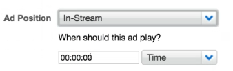

You can configure ads to use with live streams.
Supported Ad Plugins for Live Ads Integration
The following ad
plugins support integration with live streams:
Supported Ad Positions
Ads for live streams are supported for the
following ad positions:
Configuring Ads for Live Streams
Setting up ads for live streams is
very similar to setting up ads for a VOD asset. The key difference is that, for live
streams, the duration is unknown. Therefore, when you configure the ad position for a
mid-roll ad in the Backlot UI, you must specify
Time (not
Percent).

This configures the ad to play a set time after the video started
playing.